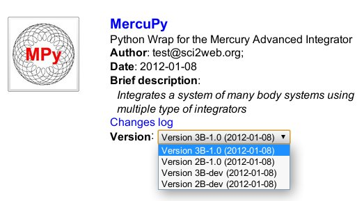

User Guide
| Author: | Jorge Zuluaga |
|---|---|
| Version: | Revision 1, Wed Nov 30 06:29:15 COT 2011 |
| Copyright: | This document has been placed in the public domain. |
Table of Contents
Abstract
This document presents a complete guide to use Sci2Web. You will learn here how to run Scientific Applications ported to Sci2Web server sites and how to get previously computed results obtained by you or any other users using the same applications. To start using Sci2Web in a given server site you have to signup for an account. Sci2Web have a rather simple interface for creation and management of user accounts albeit ensuring the security and privacy of the user data. Once you have created your account you will be able to select any available versions of the Scientific Applications ported to the Sci2Web server site. In the application page you will be able to create, run and control instances of the selected application. Results from already finished instances of the application ran by you or any other user could be retrieved and download from the application page, giving Sci2Web the additional power of a dynamic scientific database. Since many scientific applications are sources of tabular data, Sci2Web includes a simple albeit powerful web plotting tool able to produce high quality scientific plots. These and other user operations will be explained in detail in the following sections.
Presenting Sci2Web
Sci2Web is a web framework intended to provide web interfaces to Scientific Applications (SAs). A Scientific Application is a piece of software developed or adapted by scientist to solve scientific problems. Although it is common today to find powerful software providing advanced graphical and user interfaces (e.g. Reduce, SAGE, Mathematica, Matlab), a huge fraction of the specific software developed and/or used by scientist still relies on programs developed in low level programming languages (C, fortran). Even although a growing number of scientist are using powerful and modern programming languajes (C++, Java, Python) their programs still have simplified user interfaces and most of them lack of a proper graphical interface.
In most cases SAs simply does not require to have such advanced user or graphical interfaces. Most of the time scientists restrict their programs just for their personal use or share it only with close colleagues and students. But from time to time a good piece of code arises having the potential to become a publickly available SA. The decision to share a SA and allows other to use it is a wise decision that in some cases have a very positive impact on the visibility of scientific work. However the development of software intended for what we can call final users and although they could be experts, is challenging even for a skillful scientific developer. Many skills are required ranging from operating system programming to advanced graphical interfaces development.
Sci2Web is a solution created for those scientist who desire to share the software they developed with a wider scientific community but to the lowest developing cost. It provides the means to configure a fully albeit simple web interface even to very complex scientific applications without the burden of change the original software or develop advanced graphical interfaces. But Sci2Web is much more than that. It provides you a platform to publish your application in the web, automatically generate properly prepared tarballs of your software, give access to related papers and other information important for the visibility of your scientific work, among other features. To know many of the advantages offered by Sci2Web read the white paper.
If you want to see a living example go now to the MercuPy, the sample application served in the home site of the project.
Sci2Web is not a content or a version management software. It simply provides the required tools to configure and run SA applications in the web.
Creating and managing an account
Creating an account in a Sci2Web server site is a simple process: you just have to Press the Sign Up link at the top right of the page and fill the sign up form.
Once the form is submitted a notification message is sent to your e-mail. You have to use the activation link sent in the notification message to activate your new account.
Important
If the server site does not support e-mail notifications you have to contact the web master to activate your new account. The e-mail of the web master is found in the footer area.
Once the account is activated you can login and start to enjoy the applications served in the Sci2Web site.
Recovering the user password
If you forget your password you can retrieve it using the login form. A new password will be sent you by e-mail. No re activation of the account is required.
Changing the user password
You can change your old password using the link Your account. When you retrieve a change of password the system will logout you automatically and you will need to reactivate your account using the same activation link send it when the account was first created.
Important
Sci2Web uses a simple albeit secure method to manipulate the user information. The password is never known by the web master and is stored encrypted in the site database. The user e-mail account is the only way an user could perform operations on its account.
Selecting the application
In the main page of a Sci2Web server site you will find a list of the served applications (generally under the tab Served Applications). For each application you will find a box containing basic information: the application icon (that is also a button to open the application), the short and complete name of the application (including a link to the complete description of the application), author, date of creation and brief description.
Using the deployable list you can select the version of the application you want to explore. Versions having the prefix dev are reserved for development purposes and altough they can be browsed you will not be able to create new runs. Only the application author and their contributors have permissions to create and run new instances of this versions.
Once you have selected a version you can click the Changes log link and read a brief description of what makes this version different from the others. Clicking on the icon will open a new window with the application site configured for the particular version you have selected. In the header region of the application page you will find the application logo, the name of the version you have selected and a link to the license of this particular version.
The application page is divided in a set of tabs configurable by the application authors and version contributors. By default the application page tabs are:
- Description: complete description of the application.
- Downloads: If the application has been released by authors or contributors you will find here the links to download the release version of the application.
- Runs: This is the most important tab for the purposes of Sci2Web. There you will be able to create new instances of the application, run and control them. You will be able also to access there the history of the runs created by you of this particular version of the application.
- Database: In this section you will be able to search into the database of results of this version of the application. Each time a user runs an instance of the application and the run is successful its results will be stored in a huge database. You can retrieve those results using the form provided in this section using different searching criteria.
Important
It is important to say that not all the applications ported to a Sci2Web server site should have public rights to download, run or search in their database of results. Authors and contributors could limit by different reasons the acces that any user has to the application. For example an application could be downloaded but the users could not create new runs or search into the database. In this case the application page becomes simply a public information and downloading site for the application (lossing most of the potential of Sci2Web). In other case the authors could allow to create runs but does not allow to download the application. The Sci2Web application web page becomes in this case a testing platform without the option to get a copy of the application. Finally authors or contributors could use Sci2Web application page just to give access to the database of results that have been computed only by authorized users. In this case the users could not download a copy of the application or create new runs but they have access to a valuable database of results obtained with the application.
Creating a run
To create a run you must first log in into the Sci2Web server.
The most simple way to create a new run of a served application is go to the run tab and press the big Run button.
This action will trigger the openning of a control window for the run (see figure below)
The control window is the web interface of the served application. Here you will be able to configure your run, submit it and see the results, among other important actions to control the application.
The control window is actually a bundle of two single components: the configuration (left frame) and the results window (right frame). The configuration window has a series of tabs where different types of input parameters for the application can be set it up. Values by default are loaded in the forms when a new run is created. To get information about each parameter you just have to focus into the respective input element (i.e. place the cursor inside the input box as if you want to modify it).
In the lowest part of the configuration frame you will find a control box suited with different buttons able to trigger different actions on the run. Place the mouse over any of these buttons to check which action it will trigger. In the control box you will also found a big rounded inner box with the status of the run. When a new run is created the default status will be Configured meaning that the run has been properly configured and ready to be Compiled or Submitted.
The action buttons will be activated or deactivated according to the status of the Run. For example if the run has not been compiled yet you will not be able to submit it (play button ). The number and type of control buttons you will find in the control box will depend on the type of control actions that the authors/contributors has set up for the application.
In the example run shown in the previous figure you have to press the compile button to get your run compiled and ready to be submitted.
Each time you perform a control action on your run the status will change. There is a fixed set of run status: Configured, Ready, Submitted, Running, Paused, Stopped, Killed, Finishing, Finished and Error. They are self explanatory. When your run is at the Submitted, Running, Paused or Finishing status the configuration frame will be blocked out to avoid the reconfiguration of a run that is in the middle of a computation. In these cases however you will be able to perform special actions (Stop , Kill or Resume ) to change the status of your run.
Once your run is finished the results frame is reloaded showing the last status of your results. You can use the reload buttons placed at the upper-right corner of the results elements to update their content at any time during the execution of your run.
A special action, the Post Action , could be used to perform post-execution actions on the results of your run without to submit it again. This is a very useful feature when you want for example to regenerate the plots for a given result without recomputing again the data.
Important
Not all the applications have the same set of action buttons. Authors/Contributors could limit the number and type of control actions you can perform on your runs.
The second way to create and control new runs is using the control panel provided with most of the application in the runs history section of the Run Tab. This is an advanced way of creating and controling your runs and we will explain it in detail in the next section.
Controlling your runs
In the Run tab of the application page, just below the big Run button, you will find the history of the runs prepared and sumitted by you.
In general the history maintains a record of what runs you have prepared and submitted of a given application. It allows you additionally to search, configure, download, resubmmit and remove old runs.
In most of the applications, however, the history section could be also used to create, control and follow the status of bunches of runs. These additional capabilities are included in a tool called the Control Panel. Pressing the Control Panel link located at the header of the History table you can toggle the control panel box.
Using this panel you will be able to:
- Create at once one or multiple runs from a given configuration template (New from template ).
- Remove an existing configuration template (remove button at the New from template section)
- Perform a given action to one or multiple runs (Valid actions section).
The latter feature is particularly interesting since with a single click allows you to perform complex actions over multiple runs. For example you can submit a lot of pre configured runs. This is a very useful feature when working with parametric type of runs.
Each run in your history has a contextual menu with a complete set of additional actions. To deploy this menu you just have to mouse over the table box with the run name and press the down button :
Not all the actions shown in the previous figures will be available for runs of any application. For example the Download Sources action could be restricted by the authors/contributors of the application. The same applies for the Browse action .
The actions available in the contextual menu are:
Configure: Open the configuration window.
Results: Open the results window.
- Control Panel: Open the control window (configuration and results
in a single window).
Run status: See the status of a submitted run.
- Download Results: Download the results file of the run (if
available).
- Download Sources: Download the complete set of source files
associated to this run.
Browse: Browse the run directory. Sci2Web is equipped with a simple albeit functional file manager. It allows you to browse directories listing files and subdirectories with the right permissions allowing authors, contributors or web masters to maintain safe critical files. In the case of the directory of a run the list of files includes only certain configuration and result files. If you want to have access to other files use the Download Sources link if available.
Working with templates
A configuration template is a file containing the configuration of a typical run of a given application. When a new run is created the Default template is used by default. Users can create their own templates and use them to generate other runs.
To create a new template use the configuration window of the run you want to use as a model and go to the run tab.
There you will find and input box and two buttons, an and a that allow you to create a new template and save an existing one respectively. You have to give a name to the template. Here you can use blank spaces though the use of special characters is not recommended. Once your new template is created and after reloading the run history page you will find in the control panel the option to create new runs from the recently created template. You can use also the control panel options to remove an existing template.
But why should you use templates? One of the most interesting features of Sci2Web as a tool to control on-line scientific applications is the possibility to create bunches of instances of an application, change systematically certain input parameters and run all them with a single click. This kind of operations are frequently called parametric studies. To create a parametric study you can use templates to generate the set of similar runs that conforms the study.
Let us give you an example using the sample application MercuPy and its version 3B-1.0. This version of MercuPy allows you to simulate the dynamic of a three body system where one of them is much more massive than the other two. That is the case of the Sun-Earth-Moon system. Imagine you want to investigate the effect that the eccentricity of the Moon orbit respect to the Earth has in its dynamical evolution. You want to simulate a 10 years period for 5 different synthetic Sun-Earth-Moon systems with Moon geocentric eccentricities of 0.0, 0.2, 0.4 and 0.8.
The first step is to create a new run with the Default template. Then open the configure window for this run and set all the input parameters for the simulation including an initial eccentricity. Using the configuration window for this model run create a new template with the name Sun-Earth-Moon system. We can also to assign a easy to identify name to this model run. Something like SEM: e=0 could be appropiate. Changing the name of the run will require that you save the run before to continue.
Once the run has been saved and the new template has been created close the configuration window and reload the run history page. Open the control panel and creates with the Sun-Earth-Moon system template four new runs.

Now you have to reconfigure each run assigning them the respective eccentricity. Give to each run a proper name following the same rule as that used for the name of the model run. Once all the runs in the parametric study has been configured, select all in the history table, compile and then submit them.
If all the runs complete successfully now you have the results of your parametric study. You can retrieve those results using two methods: 1) downloading the results of each run one by one with the respective option in the contextual menu and 2) using the database search tool. In the following section we will explain in detail how to search for results in the database of an application.
Searching for results
Most of the scientific applications ported to Sci2Web have a database containing the properties and results of each run succesfully completed in the web interface. In general these results can be retrieved by any visitor of the application page using a specially designed interface. You can access the database interface in the database tab of the application page.
The results are retrieved using an sql select command. In the textarea input element you have write the criteria matching the runs you want to recover. You have to use the internal name of the input variables that are listed clicking at the Database Specification link. The following operators can be used in the query:
- Numeric comparison: =, <>, <, >, <=, >=. Example: Field1>=0
- BETWEEN: Between an inclusive range. Example: Field1 between 1 and 10
- LIKE: Search for a pattern. Use '%' as the wildcard. Example: Field1 like '%Sun%'
- IN: The exact value of the field is in a list of values. Example: Field1 in ('Star','Planet','Moon')
- AND, OR: logical operators. Example: Field1<1E2 AND Field2>0
- (): Group operators. Example: Field1 like '%0.2%' and (Field2>0 or Field3<100)
Following the example developed in the previous section you can retrieve the results of the runs in the parametric study using the query shown in the figure below.
Once you have the table with the list of results matching your query you can perform two basic actions on them: download a big tarball containing a set of compressed files with the results of the runs in separated directories. Or join all the results in a single directory and return the corresponding tarball.
The second option is best suited if you want to compare results from different runs using for example plots or statistical tools. In this case the file names for each run have an unique suffix identifying the run. Additionally a table matching the run suffix and its characteristics are listed in a text file allruns.oxt included in the join directory.
The plotting tool
One of the most common task once a set of results are obtained after running a scientific application is try to plot some of the data obtained. Sci2Web is equipped with a basic albeit complete tool to generate plots from the data produced by a run. This feature allows you to create images from computed data without download the results.
The Sci2Web tool uses the Matplotlib python package. Those familiarized with Matplotlib will find common the syntax of the commands and the options of the plotting tool.
To use the plotting tool browse the results directory of a finished run and find the data file you want to plot.
Select the plot option in the contextual menu of the datafile and wait until the plotting tool is openned in a new window. It could takes some time while the tool generates the a default image from the data file.
The tool is rather intuitive. In the left panel you have a form where the basic information about the plot should be input. There you have to select the data file or data files you want to plot, the number of the column(s) in the data file(s) with the values of the abscisas (X Column), the number of the column(s) with the ordinates (Y Column), the line style(s) and the range of the x- and y-axis (X Range and Y Range). In the right panel you will find other input boxes to set the labels of the axes and the title of the plot.
There are different type of plots you could generate with this tool:
Single file, single y-column. This is the most simple type of column. The plotting options are as shown in the previous figure.
Single file, multiple columns. If you want to plot multiple columns of the same file add the numbers of the other columns to the Y Columns input field always between brackets. Example: [2,9]. The linestyle for each column will be by default the same. If you want to customize the line styles of each column add a new style parametrization for the new column in the Styles field. Example: [('a','blue','-',1,' ',2),('q','red','-',1,' ',2)].
Multiple file, simple x- and y-column specification. You can also include in the same plot, data coming from multiple files. To do this add the name of the additional files into the Files field. If you do not modify the X Column and Y Column fields the same X and Y columns specification will be used for both filesq.
Multiple file, complex x- and y-column specification. When including multiple files you can specify the x- and y-columns and their respective styles in very complex ways. The Styles field used to generate the ploto shown below is:
[(r'$a_{oplus}$','blue','-',1,'+',2),(r'$q_{oplus}$','blue','--',1,'+',2),(r'$Q_{oplus}$','blue','-.',1,'+',2)],[(r'$a_{moon}$','red','-',1,'+',2),(r'$q_{moon}$','red','--',1,'+',2)]
Notice the use of LaTeX to specify the labels (the r before any label or text tag in LaTeX format is mandatory).
Using the Extra code field you can add other elements to the plot. In this case you need to know Matplotlib and python and realize that the axes object for the plot is internally called ax. In the following example a horizontal line with a text has been added to the figure using the Extra code:
' ax.axhline(0.95,color="black",linewidth=3); ax.text(30,0.955,"inner boundary",horizontalalignment="right"); '
Notice that each line of the Extra code should be end in ';'.
More properties of the plot could be modified expanding the plot properties form ( button at the end of the form).
Copyright (C) 2011 Jorge I. Zuluaga